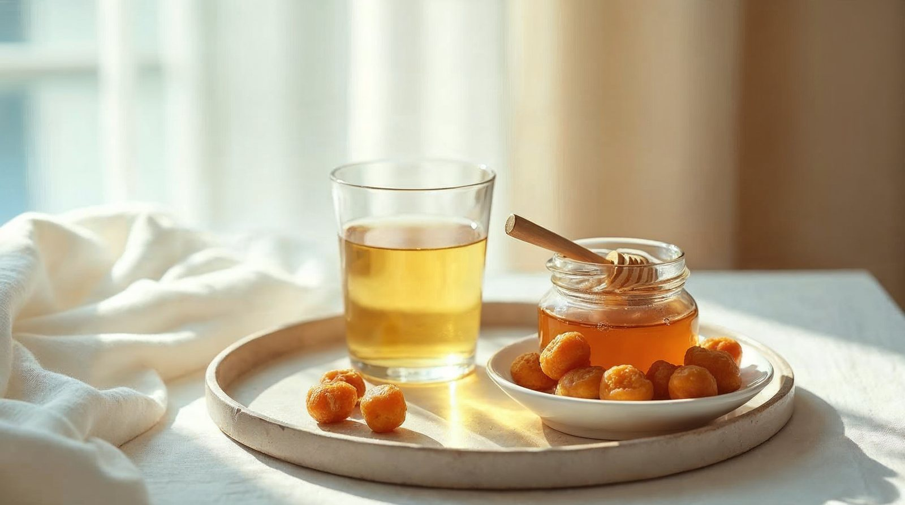
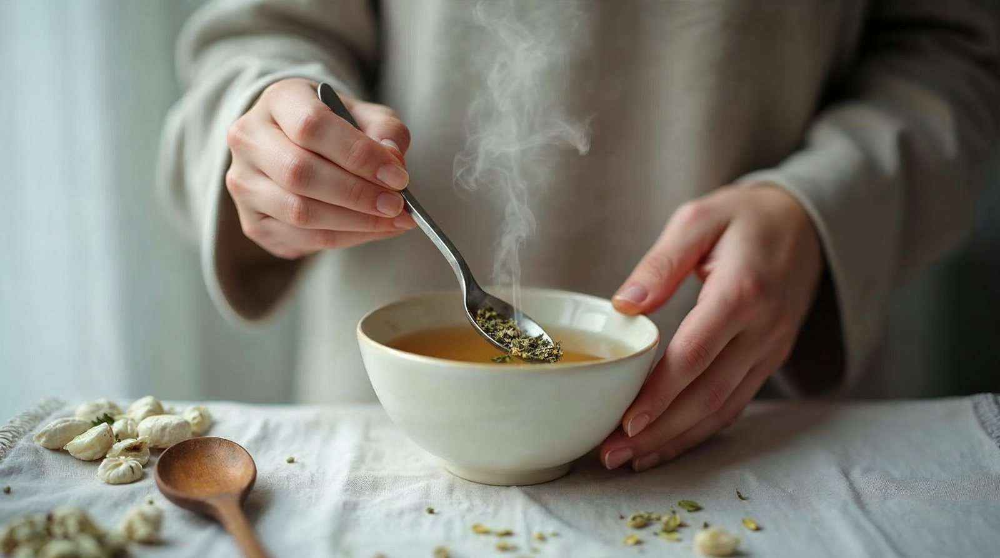
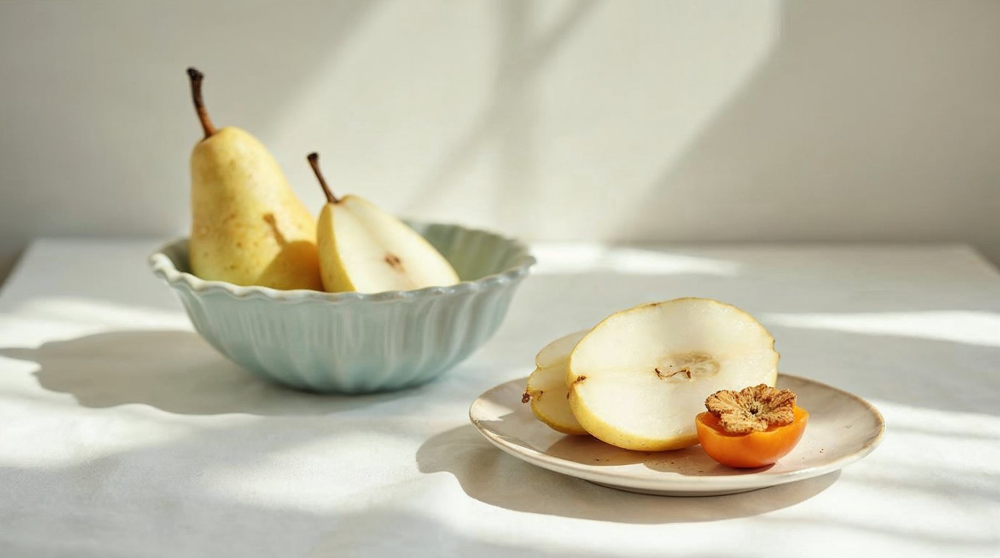
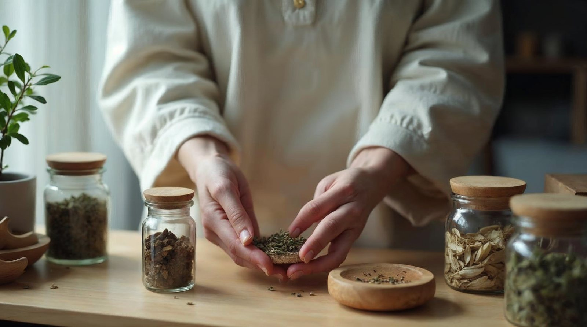

이종호 한의사 감수좋은꿈참사랑한의원 대표원장 (한의사 면허번호 19769)발행 2026-11-23 · 수정 2026-11-26
이 글의 차례
- 왜 이런 불편이 생길 수 있나요
- 먼저 이렇게 여쭙니다
- 일상에서 먼저 해 볼 수 있는 것
- 상황별 예시
- 자주 하는 오해
- 스스로 점검해 보세요
- 쓴맛과 맞지 않는 것은 어떻게 다른가요?
- 왜 쓴 한약이 있고 덜 쓴 한약이 있을까요?
- 마시는 순간을 이렇게 바꿔 보세요
- 처음 처방받을 때 미리 말씀해 주세요
- 맛 때문에 생기기 쉬운 실수
- 아이에게 한약을 먹일 때 보호자께
- 복용을 하루 습관에 붙여 보세요
- 맛이 평소와 다르게 느껴질 때
- 한약과 함께 드시는 것들도 알려 주세요
- 맛보다 더 힘든 게 있다면
- 제가 할 일과 부탁드릴 한 가지
- 한의원에서 함께 살필 수 있는 경우
- 얼마나 지켜보고 언제 상담할까요
- 이렇게 기록해 오시면 상담이 쉬워집니다
- 이런 증상은 먼저 확인이 필요합니다
- 관련 글
한약 맛이 써서 먹기 힘들다면 무리하게 참기보다 한의원에 먼저 말씀해 주시는 것이 좋습니다. 먹는 온도와 시간, 함께 먹어도 되는 것, 다른 형태가 가능한지는 처방에 따라 달라 함께 정합니다.
마실 때마다 각오가 필요하다는 분, 아이가 한약을 거부한다는 부모님이 있는데, 맛 때문에 자꾸 거르게 되면 상담 때 꼭 알려 주세요. 혼자 양을 줄이거나 다른 것을 섞기 전에 먼저 여쭤 주시면 처방에 맞는 방법을 함께 찾을 수 있습니다.
왜 이런 불편이 생길 수 있나요
- 약재마다 고유의 쓴맛과 향이 있어, 처방에 따라 맛이 꽤 다르게 느껴질 수 있습니다.
- 같은 한약도 데운 정도에 따라 맛과 향이 다르게 느껴진다는 분이 많습니다.
- 맛은 코로 들어오는 향과 함께 느끼기 때문에, 냄새에 예민한 분은 같은 한약도 더 힘들어할 수 있습니다.
- 아이들은 쓴맛에 더 예민해 거부하기 쉽습니다.
- 빈속에 마시면 속이 메스꺼운 분도 있어, 먹는 시간이 맛만큼 중요할 수 있습니다.
- 바쁜 아침에 급하게 마시면 긴장한 상태에서 쓴맛을 더 크게 느낀다고 말씀하시는 분도 있습니다.
먼저 이렇게 여쭙니다
- 어떤 맛이 가장 힘드신가요?
- 데워서 드시나요, 차갑게 드시나요?
- 복용을 거르는 날이 얼마나 되나요?
- 아이가 먹는 경우 나이는 어떻게 되나요?
- 마신 뒤 속이 메스꺼운가요?
- 하루 중 언제 드시는 것이 가장 편한가요?

일상에서 먼저 해 볼 수 있는 것
- 안내받은 온도로 데워 한 번에 천천히 마시기
- 마시기 전에 물 한 모금으로 입을 적셔 두기
- 마신 뒤 미지근한 물로 입을 헹구기
- 함께 먹어도 되는 것이 있는지 한의원에 먼저 확인하기
- 아이에게는 먹는 이유를 쉽게 설명해 주기
- 거른 날은 표시해 두고 다음 상담 때 알려 주기
- 데우는 시간과 온도를 매번 같게 맞추기
- 여유가 있는 시간대로 복용 시각을 옮겨도 되는지 여쭤 보기

상황별 예시
- 예를 들어 출근 준비로 바쁜 아침에 급하게 마시다 보니 쓴맛이 더 힘들다는 직장인이라면, 하루 중 여유 있는 시간으로 복용 시각을 옮길 수 있는지 함께 봅니다. 데우는 시간을 매번 같게 맞추고 마신 뒤 물로 입을 헹구는 순서를 정해 두면 부담을 덜 느낀다는 분도 있습니다.
- 예를 들어 초등학생 아이가 한약 냄새만 맡아도 고개를 돌린다면, 억지로 먹이기보다 보호자가 먼저 한의원에 알려 주세요. 아이의 나이와 평소 잘 먹는 것, 싫어하는 것을 듣고 먹는 시간과 방법, 가능한 형태를 보호자와 함께 정합니다.
- 예를 들어 빈속에 마시면 속이 메스껍다는 수험생이라면, 맛의 문제인지 먹는 시간의 문제인지부터 나눠 봅니다. 식전·식후 복용은 처방에 따라 다르니 임의로 바꾸지 말고 먼저 여쭤 주세요.
자주 하는 오해
- 쓸수록 몸에 더 좋다고 여기는 분이 있지만, 맛의 세기는 처방에 들어간 약재에 따라 달라질 뿐 그만큼 더 잘 듣는다는 뜻은 아닙니다.
- 참고 먹어야 한다고 생각해 말하지 않는 분이 많지만, 맛 때문에 자꾸 거른다는 것을 알려 주셔야 방법을 함께 찾을 수 있습니다.
- 꿀이나 주스를 섞으면 괜찮다고 생각하기 쉽지만, 처방에 따라 다를 수 있어 먼저 확인이 필요합니다.

스스로 점검해 보세요
- 일주일에 두 번 이상 맛 때문에 거르거나 남긴다
- 마실 때마다 오래 망설이게 된다
- 마신 뒤 메스꺼움이 한참 이어진 적이 있다
- 데우는 시간과 온도가 그날그날 다르다
- 안내받은 복용 시각(식전·식후)을 기억한다
- 꿀이나 주스를 섞어도 되는지 아직 여쭤 보지 않았다
- 아이라면 한약을 왜 먹는지 아이가 알고 있다
쓴맛과 맞지 않는 것은 어떻게 다른가요?
"원장님, 약이 너무 써요." 이 말씀을 들으면 저는 먼저 하나를 나눠서 여쭤봐요. 그러니까 사실은, 맛이 힘든 것과 몸에 맞지 않는 것은 두 개가 다른 얘기거든요.
맛이 힘든 건 마실 때 입과 코에서 느끼는 불편이에요. 마시고 조금 지나면 가라앉고, 속이나 몸에는 별다른 변화가 없는 경우가 많죠. 이건 먹는 온도와 시간, 방법을 바꿔서 같이 줄여 볼 수 있는 부분이에요.
반대로 마신 뒤 속이 계속 메스껍거나, 설사를 하거나, 몸이 가렵거나, 평소와 다른 느낌이 이어진다면 맛의 문제가 아닐 수 있어요. 이럴 때는 참지 마시고 복용을 멈춘 뒤 연락해 주세요. 처방을 다시 살펴봐야 하거든요.
왜 쓴 한약이 있고 덜 쓴 한약이 있을까요?
같은 한의원에서 지은 한약인데도 어떤 때는 쓰고 어떤 때는 덜 쓰다고 하시는 분이 계세요. 왜인 줄 아세요? 한약은 그 사람의 지금 몸에 맞춰 약재를 고르기 때문에, 처방이 달라지면 맛도 같이 달라지거든요.
쓴맛이 강하다고 더 센 약이라거나 더 잘 듣는 약이라는 뜻은 아니에요. 그 처방에 들어간 약재의 성질이 그런 거예요. 그래서 맛이 힘들다고 말씀해 주시는 건 실례가 아니라 처방과 복용법을 정할 때 같이 고려할 수 있는 정보예요.
저는 약재 품질을 중요하게 봐요. 제가 약재를 직접 검수하고 원내에서 달이는 것도 그래서예요. 먹고 좋아야 또 드실 수 있거든요. 맛이 힘들어 자꾸 거르게 되면 잘 지은 약이라도 제 몫을 하기 어려워져요.
마시는 순간을 이렇게 바꿔 보세요
예를 들어 냄새에 예민하신 분이라면 컵을 코 가까이 오래 두지 말고, 잠깐 숨을 멈추고 마신 뒤 바로 물로 헹궈 보세요. 맛의 상당 부분이 향에서 오기 때문에 향을 덜 맡는 것만으로도 부담이 줄었다는 분들이 있어요.
예를 들어 마시기 전에 각오하느라 한참 망설이는 분이라면, 그 시간이 오히려 쓴맛을 더 크게 만들기도 해요. 데우고, 따르고, 마시고, 헹구는 순서를 정해 두고 그대로 해 보세요. 생각할 틈을 줄이는 거예요.
예를 들어 아이라면 다 먹은 날 달력에 스티커를 붙여 주는 것처럼 작은 칭찬을 정해 두는 보호자분들도 있어요. 억지로 먹이기보다 아이가 스스로 해냈다는 느낌을 갖는 게 오래가요. 아이에게 맞는 방법은 보호자와 함께 정해요.
처음 처방받을 때 미리 말씀해 주세요
맛 때문에 고생하실 걸 미리 줄이려면 처방받기 전에 이야기를 나누는 게 좋아요. 처음 상담할 때 이런 것들을 말씀해 주시면 복용 방법을 정할 때 같이 고려할 수 있어요.
- 쓴맛이나 냄새에 유난히 예민한 편인지
- 평소 속이 잘 메스껍거나 헛구역질을 하는지
- 예전에 한약을 먹어 본 적이 있다면 그때 어땠는지
- 하루 중 약을 챙겨 먹기 편한 시간대
- 아이라면 평소 약을 먹을 때 어떤 반응인지
미리 말씀하신다고 처방이 약해지는 건 아니에요. 그 사람에게 맞는 먹는 방법까지 같이 정하는 게 처방의 일부라고 생각해요.
맛 때문에 생기기 쉬운 실수
- 남겨 두었다가 다음 번에 한꺼번에 마시기: 한 번에 드시는 양이 달라지면 처방의 뜻과 달라질 수 있어요. 남긴 날은 그대로 표시만 해 두세요.
- 물을 많이 타서 양을 늘리기: 맛은 연해져도 마셔야 하는 양이 늘어 오히려 더 힘들어지는 경우가 많아요. 바꾸기 전에 먼저 여쭤 주세요.
- 쓴맛을 달래려고 마신 직후 단 음식이나 음료를 바로 드시기: 처방에 따라 피하는 게 좋은 경우가 있어서 무엇으로 입가심할지 미리 확인해 두시면 좋아요.
- 힘들어서 며칠 쉬었다가 아무 말 없이 다시 시작하기: 쉬었다는 것도 중요한 정보예요. 다시 시작하기 전에 한 번 연락 주세요.
아이에게 한약을 먹일 때 보호자께
아이가 한약을 거부하면 보호자분도 지치시죠. 그럴 때 억지로 먹이거나 혼내면 다음에 더 거부하게 되는 경우가 많아요. 아이도 원래 쓴맛에 예민한 거예요. 의지의 문제가 아니에요.
먹기 전에 "이건 배 아픈 걸 도와주는 약이야"처럼 왜 먹는지를 아이 눈높이로 짧게 말해 주세요. 보호자가 옆에서 같이 물 한 컵을 마셔 주는 것만으로도 아이가 덜 겁낸다는 분들이 있어요. 그래도 어렵다면 그 모습을 그대로 알려 주세요. 아이에게 맞는 방법은 보호자와 함께 다시 정해요.
복용을 하루 습관에 붙여 보세요
맛이 힘든 약일수록 "이따 먹어야지" 하다가 놓치기 쉬워요. 그래서 이미 매일 하는 일에 복용을 붙여 두는 걸 권해요.
예를 들어 아침 양치하기 전, 퇴근하고 손 씻은 뒤처럼 매일 같은 순서 안에 넣어 두는 거예요. 정해진 자리에서 정해진 순서로 마시면 망설이는 시간이 줄어들어요. 식전·식후 안내는 처방에 따라 다르니, 붙일 자리를 정할 때 그 안내에 맞는지 한 번 확인해 주세요.
맛이 평소와 다르게 느껴질 때
같은 약인데 어느 날 유난히 쓰게 느껴진다는 분도 계세요. 감기 기운이 있거나 피곤한 날, 입이 마른 날엔 같은 맛도 더 강하게 느껴지기도 해요.
다만 냄새가 평소와 확연히 다르거나, 색이나 상태가 이상해 보인다면 드시지 말고 먼저 연락해 주세요. 처방이 바뀐 뒤 맛이 달라졌다면 그건 자연스러운 일이지만, 궁금하시면 다음 진료 때 편하게 물어보세요.
한약과 함께 드시는 것들도 알려 주세요
한약을 드시는 동안 커피나 차, 영양제, 다른 약을 함께 드신다면 처방 전에 모두 알려 주세요. 맛을 달래려고 함께 드시는 것이 있다면 그것도 같이요. 처방에 따라 피하는 게 좋은 것이 있을 수 있거든요.
한약을 드시는 기간에는 술은 드시지 않는 걸 원칙으로 안내해요. 복용 중에 속이 불편하거나 평소와 다른 느낌이 들면 복용을 멈추고 연락해 주세요. 처방받아 드시는 약은 처방한 의사와 상의 없이 줄이거나 끊지 않아요.
맛보다 더 힘든 게 있다면
맛보다 하루에 여러 번 챙겨 먹는 것 자체가 부담이라는 분도 계세요. 바쁜 직장인이나 학생은 점심에 챙기기가 특히 어렵다고들 하세요. 이럴 때도 혼자 끼니를 건너뛰지 마시고 먼저 말씀해 주세요. 생활 리듬에 맞춰 복용 시간을 다시 정할 수 있는지 처방에 맞춰 같이 봐요.
맛 때문이든 시간 때문이든, 거르는 날이 생기는 건 바쁘시니까 당연한 일이에요. 숨기지 않고 말씀해 주시는 것만으로도 다음 처방과 복용법을 정하는 데 큰 도움이 돼요.
제가 할 일과 부탁드릴 한 가지
맥을 짚고 소화와 입맛을 같이 본 뒤 처방과 먹는 방법을 정하고, 맛 때문에 힘드시면 형태나 복용법을 다시 살피는 건 제가 할게요. 드시는 약이 있으면 모두 확인한 뒤에 처방하고, 임신 중이시거나 가능성이 있으면 먼저 말씀해 주시고 산부인과와도 상의해 주세요.
부탁드릴 건 하나예요. 거른 날은 달력에 표시해 두기. 맛이 힘들어서 거른 날이 있었다는 걸 숨기지 않으셔도 괜찮아요. 그걸 알아야 같이 방법을 찾을 수 있거든요. 다른 건 하시던 대로 편하게 하세요.

한의원에서 함께 살필 수 있는 경우
- 맛 때문에 복용이 어려운 경우 복용 방법과 형태를 함께 상의합니다.
- 한약을 먹은 뒤 속이 메스꺼운 경우 복용 시간과 소화 상태를 함께 살핍니다.
- 아이가 한약을 거부하는 경우 나이와 상황에 맞는 방법을 함께 찾습니다.
좋은꿈참사랑한의원에서는 한약을 진찰과 상담을 거친 뒤 처방하고 원내에서 달이며, 드릴 때 먹는 방법을 함께 안내합니다. 맛 때문에 복용이 어렵다면 처방과 상태를 다시 살펴 먹는 온도와 시간, 가능한 형태를 함께 정하고, 아이라면 보호자와 함께 아이에게 맞는 방법을 찾습니다. 드시는 중에 궁금한 점은 전화로 먼저 문의해 주세요.
처음 오시면 불편한 증상과 함께 입맛과 소화, 맛이나 향에 예민한 편인지도 여쭙습니다. 맥을 짚고 필요하면 혀와 배를 살펴 한약이 필요한지부터 판단하고, 처방이 정해지면 대표원장이 약재를 검수한 뒤 달입니다.
받으시는 날에는 먹는 온도와 시각을 알려 드리고, 다음에 오시면 맛 때문에 거른 날은 없었는지, 마신 뒤 속은 어땠는지 지난 이야기를 이어서 여쭙습니다.
얼마나 지켜보고 언제 상담할까요
- 처음 며칠은 안내받은 온도와 시각을 지키며 마셔 보고, 거른 날과 남긴 양을 달력에 표시해 두세요.
- 일주일에 두 번 이상 맛 때문에 거르게 된다면 다음 진료를 기다리지 말고 전화로 알려 주세요. 먹는 방법이나 형태를 함께 다시 봅니다.
- 마신 뒤 메스꺼움이 이틀 넘게 반복되면 복용 시간과 소화 상태를 함께 살펴야 하니 연락해 주세요.
- 마신 뒤 구토가 반복되면 복용을 멈추고 바로 연락해 주세요.
이렇게 기록해 오시면 상담이 쉬워집니다
- 복용한 날과 거른 날
- 먹은 시간(식전·식후)과 온도
- 마신 뒤 속이 불편했던 날
- 아이라면 나이와 평소 잘 먹는 것·싫어하는 것
이런 증상은 먼저 확인이 필요합니다
- 숨이 차거나 입술·얼굴이 붓는 경우
- 두드러기·심한 복통·눈 흰자가 노래지는 경우(복용을 멈추고 연락)
이런 신호가 있으면 한의원보다 가까운 병원이나 응급실을 먼저 찾으세요.
관련 글

여쭙는 것
- 어떤 맛이 가장 힘드신가요?
- 데워서 드시나요, 차갑게 드시나요?
- 복용을 거르는 날이 얼마나 되나요?
생활에서 해 볼 것
- 안내받은 온도로 데워 한 번에 천천히 마시기
- 마시기 전에 물 한 모금으로 입을 적셔 두기
- 마신 뒤 미지근한 물로 입을 헹구기
한의원에서 함께 살필 것
- 맛 때문에 복용이 어려운 경우 복용 방법과 형태를 함께 상의합니다.
- 한약을 먹은 뒤 속이 메스꺼운 경우 복용 시간과 소화 상태를 함께 살핍니다.
- 아이가 한약을 거부하는 경우 나이와 상황에 맞는 방법을 함께 찾습니다.
먼저 확인이 필요한 신호
- 숨이 차거나 입술·얼굴이 붓는 경우
- 두드러기·심한 복통·눈 흰자가 노래지는 경우(복용을 멈추고 연락)
한눈에 보는 표
| 구분 | 핵심 |
|---|---|
| 여쭙는 것 | 어떤 맛이 가장 힘드신가요? 데워서 드시나요, 차갑게 드시나요? |
| 생활에서 해 볼 것 | 안내받은 온도로 데워 한 번에 천천히 마시기 마시기 전에 물 한 모금으로 입을 적셔 두기 |
| 한의원에서 함께 살필 것 | 맛 때문에 복용이 어려운 경우 복용 방법과 형태를 함께 상의합니다. 한약을 먹은 뒤 속이 메스꺼운 경우 복용 시간과 소화 상태를 함께 살핍니다. |
| 먼저 확인이 필요한 신호 | 숨이 차거나 입술·얼굴이 붓는 경우 두드러기·심한 복통·눈 흰자가 노래지는 경우(복용을 멈추고 연락) |
자주 묻는 질문
꿀이나 설탕을 타 먹어도 되나요?
처방에 따라 다를 수 있어 한의원에 먼저 확인해 주세요.
환이나 다른 형태로도 받을 수 있나요?
처방과 상태에 따라 가능한 형태가 다르니 상담 때 여쭤 보세요.
너무 써서 반만 먹어도 되나요?
양을 임의로 줄이기보다 먼저 연락해 주시면 처방에 맞는 방법을 함께 찾습니다.
차갑게 마시면 덜 쓴데 그렇게 먹어도 되나요?
처방에 따라 안내하는 온도가 다를 수 있어, 바꾸기 전에 한의원에 먼저 여쭤 주세요.
좋은꿈참사랑한의원은 재진 때 지난번 이야기부터 이어서 여쭙니다. 진료시간과 예약은 오시는 길에서 확인하세요.
어디서 상담받을 수 있나요?
좋은꿈참사랑한의원은 서울 동작구 만양로2길 2 신성빌딩 3층·5층(서울 동작구 상도동, 7호선 상도역 3번 출구 근처)에 있습니다. 한의사 3명(이종호 대표원장, 조영기 수석진료원장, 정원영 진료원장)이 진료합니다. 진료시간은 평일 09:30~20:00(점심 13:00~14:00), 토·일·공휴일 09:30~15:00이며, 방문 전 전화로 확인을 권합니다. 예약은 네이버 예약, 카카오톡 상담, 전화 02-815-7510로 받습니다.
이 글은 일반적인 건강 정보이며 개인의 진단이나 치료를 대신하지 않습니다. 증상이 있거나 복용 중인 약이 있다면 진료를 통해 확인하세요. 치료 효과는 개인마다 다를 수 있습니다.
작성 기준: 일반적으로 알려져 있는 건강 정보를 참고해 정리했습니다(대표원장 감수). 증상 기록은 1~2주 동안 하루 1회, 비슷한 시간에 적어 오시면 지난 상태와 비교하기 쉽습니다.